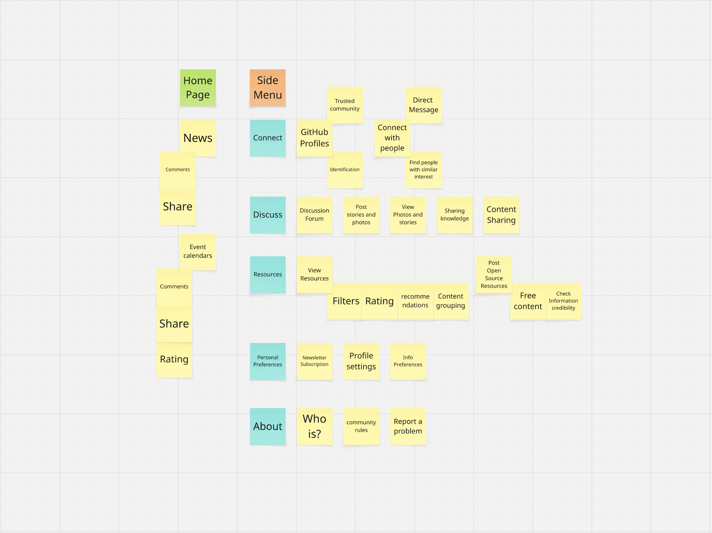

Website Site Map
This is the site map for the TechHub Website.
Prioritises news to establish the site as a centralised tech hub, directly addressing user needs for one place to stay updated. Events are also highlighted within this feed to meet the client’s goal of event visibility. Accessibility is supported through clear headings, high-contrast typography, and simple navigation. Viscerally, the page feels dynamic and current, giving users the sense of being plugged into a lively tech community.
Provides a centralised hub for updates, directly supporting the user need to access tech news in one place. Accessibility is supported with clear headings and readable layouts. Viscerally, the feed feels fresh and engaging, encouraging regular visits.
Enables interaction and engagement. Users can comment on news posts. Accessibility: labelled input fields. Visceral: familiar comment layout encourages participation.
Allows sharing of news to increase reach. Accessibility: keyboard and screen-reader friendly buttons. Visceral: recognisable share icons.
Highlights upcoming events to meet the client’s need for visibility and promotion. Supports user stories around discovering and filtering events in one place. Accessibility is ensured with labelled filters and structured listings. Viscerally, event cards feel vibrant and inviting.
Encourages discussion on events. Accessibility: labelled input fields. Visceral: familiar comment layout.
Supports event promotion. Accessibility: keyboard and screen-reader friendly. Visceral: bold, inviting share buttons.
Collects user feedback. Accessibility: ratings with text alternatives. Visceral: interactive star icons.
Builds community by helping users connect with peers, meeting the client’s goal of fostering meaningful connection. Supports user stories about finding people with similar interests. Accessibility is supported through clear profile layouts and labelled actions. Viscerally, the design feels social and approachable.
Showcases user skills and supports collaboration. Accessibility: descriptive link text. Visceral: clean integration with familiar icons.
Facilitates private communication. Accessibility: labelled input fields. Visceral: chat-style layout is intuitive.
Enables networking. Visceral: vibrant profile cards.
Provides a space for knowledge-sharing and conversation, supporting the client’s goal of sharing users' stories. User stories around sharing and discussing content are directly addressed. Accessibility is considered with structured threads and headings. Viscerally, the forum feels organized and inviting for interaction.
Central hub for discussions. Accessibility: semantic HTML for posts. Visceral: clear thread separation encourages participation.
Supports creative sharing. Accessibility: alt text for images.
Expands reach of discussions.
Centralises useful materials to meet the client’s goal of accessing resources that enhance users' visibility and influence. Supports user stories for browsing and sharing resources. Accessibility is ensured with clear headings and labelled filters. Viscerally, the layout is clean and easy to navigate.
Show GitHub Repos to fullfil client's needs and user stories.
Helps users narrow down options. Visceral: clear filter panel.
Collects user feedback. Visceral: upvotes.
Suggests relevant resources for users to fullfil their needs. Visceral: personalised section.
Organises resources logically. Accessibility: clear headings.
Enables contribution.
Allows users to personalise their experience, addressing the client’s goal of having newsletter subscriptions. Supports user stories related to reducing information overload. Accessibility is supported with forms and labels.
Supports profile management. Visceral: clean editing interface.
Allows users to subscribe/unsubscribe.
Lets users tailor their experience.
Provides transparency and builds trust, meeting the client’s goal of inclusivity, accessibility and ethical design. Accessibility is supported with clear headings and structured content.
Explains the website.
Shows safe usage guidelines.
Allows users to report issues easily. Accessibility: labelled forms and error messages.